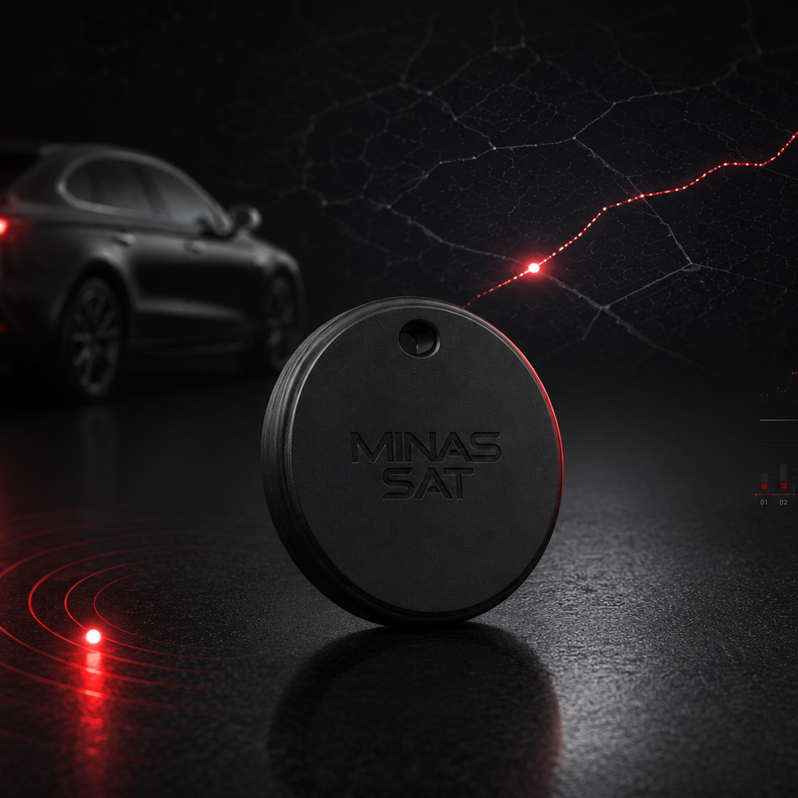

TAG rastreadora para objetos e pequenos ativos.
Uma solução discreta, em formato semelhante ao tamanho de uma moeda, para apoiar a localização de bolsas, malas, equipamentos, chaves e outros itens. As características exatas dependem do modelo disponível.

Imagem ilustrativaPequena no formato, versátil na aplicação.
A solução pode ser avaliada para diferentes tipos de itens, sempre respeitando as condições técnicas do modelo.
O modelo correto depende do uso.
TAGs compactas podem utilizar tecnologias diferentes. Por isso, a equipe confirma as condições antes de apresentar a solução comercial.
O que confirmar
- Tecnologia e método de localização.
- Cobertura e necessidade de rede ou dispositivos próximos.
- Autonomia, bateria e forma de alimentação.
- Frequência de atualização e histórico.
- Dimensões, resistência e acessórios.
- Aplicativo, plataforma e eventual custo recorrente.
Quando usar outro rastreador
Para telemetria veicular, bloqueio, acompanhamento operacional contínuo e alimentação ligada ao veículo, um rastreador convencional pode ser mais adequado. A Minas Sat ajuda a comparar as opções.
Comparar com rastreamento veicularEsta página apresenta uma família de solução. Imagem ilustrativa. Tecnologia, funcionalidades, autonomia, cobertura, resistência, disponibilidade e valores devem ser confirmados na cotação do modelo efetivamente fornecido.
Quer receber uma indicação da TAG adequada?
Informe o item, local de uso e tipo de acompanhamento desejado.